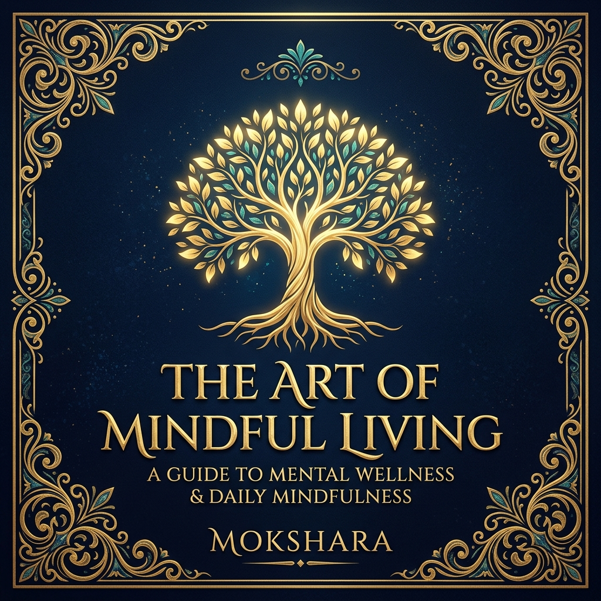
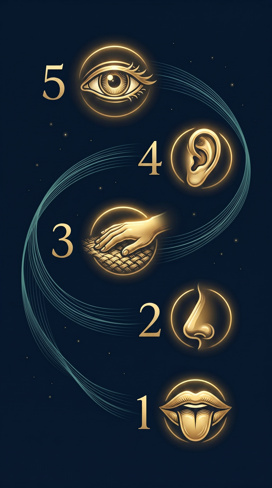

The Art of
Mindful Living
"The present moment is the only moment available to us, and it is the door to all moments."
The Art of Mindful Living
A Mokshara Wellness Publication
© 2026 Mokshara. All rights reserved.
No part of this ebook may be reproduced, distributed, or transmitted
in any form without the prior written permission of the publisher.
This ebook is intended for educational and informational purposes only.
It does not constitute medical or psychological advice.
Please consult a qualified professional for personal health concerns.
First Edition — 2026
mokshara.in
Contents

- 01What Is Mindfulness?
- 02Breaking the Autopilot
- 03The 5-4-3-2-1 Grounding Technique
- 04Living in the Present Moment
- 05Mindful Daily Practices
What Is Mindfulness?
Mindfulness is the practice of intentionally focusing your attention on the present moment — without judgement. It is not about emptying your mind or achieving a mystical state. It is simply the gentle act of noticing where you are, what you feel, and what is happening right now.
For centuries, contemplative traditions across India, China, and the Buddhist world have practised forms of mindful awareness. Today, modern neuroscience confirms what ancient wisdom always knew: paying attention to the present moment physically changes your brain for the better.
The Neuroscience
Research at Harvard Medical School (2011) showed that just 8 weeks of mindfulness practice increases grey matter density in the hippocampus — the brain region responsible for learning, memory, and emotional regulation — while simultaneously reducing the size of the amygdala, your brain's "fear centre." This means mindfulness literally rewires your stress response.
Key Takeaways
- Mindfulness means paying attention to now — on purpose, without judgement
- It is a skill, not a talent — anyone can learn it with practice
- 8 weeks of regular practice physically changes brain structure
- It reduces amygdala reactivity (less anxiety, less knee-jerk stress)
- It strengthens the prefrontal cortex (better decisions, more calm)
Your mind is not your enemy — it is a garden. Mindfulness is simply learning to tend it with patience rather than pulling at every weed in panic.
Breaking the Autopilot
How often do you arrive somewhere without remembering the journey? How many meals have you eaten while staring at a screen, barely tasting the food? This is autopilot mode — your brain's default setting that processes life on repeat while your conscious mind drifts elsewhere.
Autopilot is not inherently bad. Your brain developed it to conserve energy for novel threats. The problem arises when autopilot becomes your only mode — when days, weeks, and months blur together into a haze of routine without awareness.
The Neuroscience
A landmark Harvard study by Killingsworth & Gilbert (2010) tracked 2,250 adults and found that people spend 46.9% of their waking hours thinking about something other than what they are actually doing. The study also found that this mind-wandering consistently made people less happy, regardless of the activity. Presence equals peace.
Breaking autopilot begins with micro-moments of noticing. The next time you wash your hands, feel the temperature of the water. When you walk through a doorway, pause for one breath. These tiny interruptions are surprisingly powerful — each one is a moment of reclaimed consciousness.
Try This — The Doorway Reset
- Every time you walk through a doorway today, pause for 2 seconds
- Take one slow, deliberate breath
- Notice three things: what you see, hear, and feel physically
- Then continue with intention — "I am choosing to enter this room"
You do not need to change your entire life to be mindful. You only need to change one moment — this one, right now — and then the next one will take care of itself.
The 5‑4‑3‑2‑1 Grounding Technique

When anxiety strikes, your mind races into the future — imagining worst-case scenarios, replaying fears, spiralling into "what-ifs." The 5-4-3-2-1 grounding technique is a clinically proven method that yanks your attention back into the present by engaging all five of your senses, one at a time.
This technique works because it hijacks the brain's threat-detection system. When your amygdala fires a false alarm, it tells your body "danger is here." By forcing yourself to catalogue real sensory input — what you literally see, touch, hear, smell, and taste — you send a counter-signal to the prefrontal cortex: "I am safe. The danger is not real."
The 5-4-3-2-1 Practice
- 5 things you can SEE — Look around slowly. Name five objects: the colour of the wall, the shape of a cloud, the pattern on your sleeve
- 4 things you can TOUCH — Feel the texture of your clothing, the smoothness of a table, the weight of your phone, the air on your skin
- 3 things you can HEAR — Close your eyes. Identify three distinct sounds: a fan humming, birds outside, your own breathing
- 2 things you can SMELL — Breathe in deeply. Notice the scent of your soap, the smell of the room, or the faint aroma of tea nearby
- 1 thing you can TASTE — Take a sip of water or simply notice the current taste in your mouth. Focus entirely on this one sense
The Neuroscience
Sensory grounding activates the parasympathetic nervous system — your body's "rest and digest" mode. A 2018 study published in the Journal of Clinical Psychology found that grounding techniques reduced anxiety symptoms by up to 62% within just 5 minutes. It works because your brain cannot simultaneously process detailed sensory input and maintain a panic response.
Anxiety lives in the future. Your five senses live only in the now. When you ground yourself in what is real, the imaginary threats begin to dissolve like mist in morning light.
Living in the Present Moment
The past is a memory. The future is imagination. The only place where life actually happens is right here, right now. Yet most of us spend our days ping-ponging between regret about yesterday and anxiety about tomorrow — rarely landing in the space where we actually exist.
Living in the present does not mean ignoring your past or abandoning your goals. It means giving your full attention to whatever is in front of you. When you eat, you taste. When you listen, you hear. When you walk, you feel the ground beneath your feet. This is not poetic idealism — it is a trainable neurological skill.
"The ability to be in the present moment is a major component of mental wellness."
— Abraham Maslow, PsychologistThe dopamine system in your brain — the circuit responsible for pleasure and motivation — responds most powerfully not to big events, but to novelty and attention. When you pay full attention to a simple cup of tea, your brain registers it as genuinely rewarding. When you drink that same tea while scrolling your phone, your brain registers almost nothing. Presence amplifies pleasure.
Presence Practices for Daily Life
- Single-tasking: Do one thing at a time. Close extra tabs. Put your phone down during meals
- The 3-Breath Pause: Before any new activity, take 3 conscious breaths to reset
- Savouring: When something is pleasant — a sunset, a warm bite of food, a hug — deliberately slow down and notice the feeling for 15 seconds
- Gratitude anchoring: Each morning, name 3 specific things you are grateful for right now, not in general
You are not behind. You are not too late. You are exactly where your next breath is. That is always enough.
Mindful Daily Practices
Mindfulness is not reserved for a meditation cushion. Its greatest power lies in how it transforms ordinary daily activities — waking, eating, commuting, working, resting — into moments of genuine awareness. Below are science-backed practices you can weave into your day, starting tomorrow morning.
☀️ Morning: The Conscious Wake-Up
Before reaching for your phone, take 5 slow breaths while still lying in bed. Feel the weight of your body on the mattress. Notice the quality of light in the room. Set one simple intention for the day — not a goal, but a feeling: "Today, I choose calm." Research from the University of Nottingham shows that the first 20 minutes after waking set your neurochemical tone for the entire day.
🍵 Midday: The Mindful Pause
At lunch, eat the first three bites of your meal in complete silence with no screens. Chew slowly. Notice flavours, textures, and temperatures. This practice activates your vagus nerve — the longest nerve in your body — which sends calming signals from your gut to your brain. A 2019 study in the journal Appetite found that mindful eating reduces cortisol levels by up to 23%.
🌙 Evening: The Gratitude Close
Before sleep, write down three specific good moments from the day. Not vague generalisations ("family") but precise moments: "The warmth of chai at 4pm" or "My daughter's laugh after dinner." Neuroscientist Rick Hanson's research shows that holding a positive memory in awareness for just 15 seconds physically transfers it from short-term to long-term memory, rewiring your brain toward positivity.
Your 7-Day Mindfulness Starter
- Day 1-2: Morning 5-breath practice + Doorway Resets
- Day 3-4: Add silent first 3 bites at one meal
- Day 5-6: Add evening gratitude journalling (3 moments)
- Day 7: Full day — all three practices together. Notice how you feel
Mindfulness is not about adding something to your life. It is about finally being present for the life you already have — and discovering that it was always more beautiful than you realised.
May You Walk in Awareness
Every moment of attention is a gift you give yourself. The practices in this book are seeds — small, quiet, powerful. Plant them gently, water them with patience, and watch your inner world transform.
You do not need to be perfect. You only need to begin.
Relax. Heal. Rise.